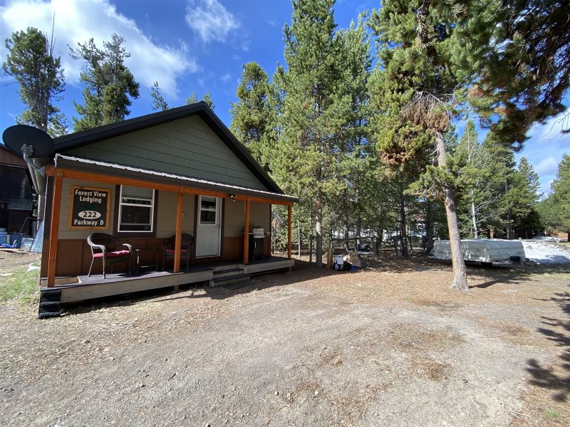
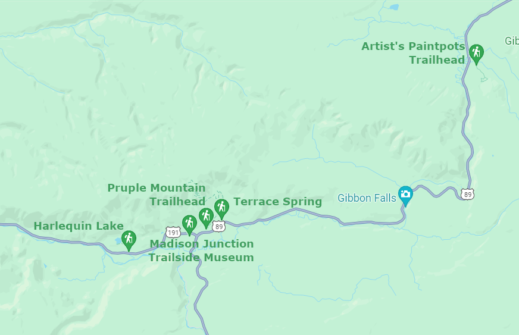
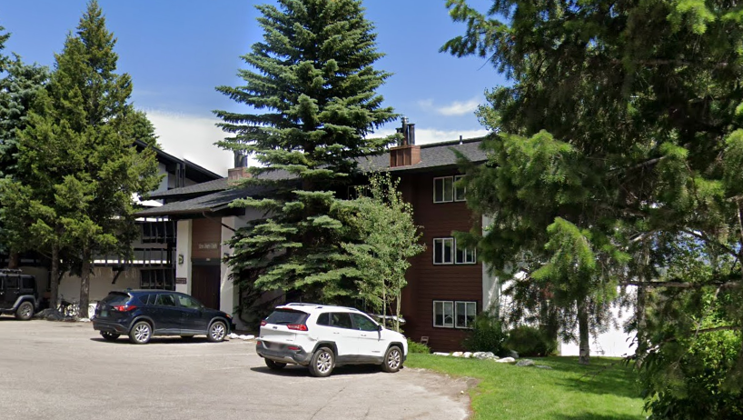
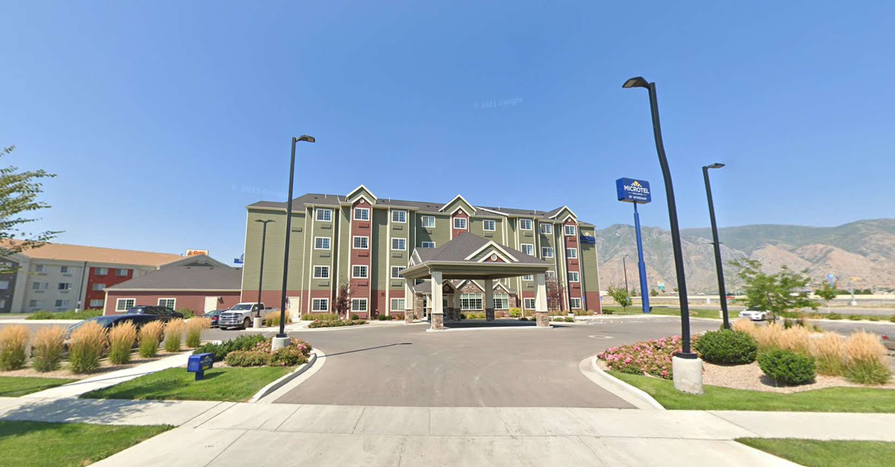

Forest View Cabin

Roam Property Management
calendar_today
Check In:
Mon, Aug 19, 2024 4:00 PM
Checkout:
Fri, Aug 23, 2024 10:00 AM
location_onAddress
222 D Parkway West Yellowstone MT US
phoneContact Information
If you have any questions or need anything, please call or text us at 406.740.8069. On the off-chance you can’t reach us in the event of an emergency, contact Mindy at 406.640.0350.
access_timeCheck-in Time
Check-in is at 4:00 pm. We ask that you respect this time frame which allows our cleaners to have the house ready for you.
lockDoor Lock
Door code: 1758
There is a combination lock on the front door. Your personal four digit door code will be emailed to you 3 days prior to check in. Enter your code to unlock the door. To lock the door from the outside, just push the X button on the bottom right of the key pad (next to the "0" key). You will hear the deadbolt turn and see a green checkmark light up. Make sure that when you leave the property that you lock all doors to safeguard your valuables.
mapDirections
How to get to the Forest View Cabin:
The cabin is located at 222 Parkway D. Parkway D is not paved, so don't be alarmed!
If coming into West Yellowstone from Hwy 191 (Bozeman/Big Sky area): Turn right on the first street as you enter town, Gibbon Ave., go 1 block and turn right on Dunraven Street. In a half block, you will turn left on Parkway D. The cabin is just a half block down on your left.
If coming from Hwy 20 (Idaho): As you enter the town of West Yellowstone, you will go 4 blocks to Electric Street (there is a Phillips 66 gas station on the corner), turn left. Go 1.5 blocks and turn right onto Parkway D (there will be some condos on the right, just before you turn, the cabin is a half block in on your right.
If entering West Yellowstone from Yellowstone Park: Take a right at the stoplight (Canyon Street) as you are entering town, go 3 blocks and turn left on Gibbon Avenue (the first intersection without a stoplight). Go 1 block and turn right on Dunraven Street. In a half block, you will turn left on Parkway D. The cabin is just a half block down on your left.
wifiWIFI
Network: Forest View
Password: Yellowstone1872
inventoryInventory/Starter Kits
You will find the home is stocked with all the basics:
- Ready-made beds and bathroom linens for the number of guests on the reservation
- Kitchen stocked with glasses, dishes, and utensils, as well as basic cookware
- The kitchen will be stocked with hand soap, dish scrubber, dish soap, dishwasher detergent, a roll of paper towels, and kitchen trash bags
- Each bathroom is equipped with shampoo, conditioner, body wash and toilet paper
- There is a reusable cooler for you to use during your stay, please be sure to wipe it out when finished
The water at every property is extremely fresh! Our water is clean spring water and is very cold from the tap, there is no need to buy bottled water. Please bring re-usable water bottles to eliminate the single use plastic that ends up in our landfill.
The starter kits provided are complimentary and are meant to cover your needs before you get to the store to do your shopping. You may find supplies that have been left by other guests which you are welcome to use, but make sure to take a quick inventory before you shop to ensure you have everything you will need during your stay.
local_cafeCoffee Maker
Our homes carry standard 12-cup automatic coffee makers. Filters are provided, just bring your favorite java!
local_laundry_serviceLaundry
There is a washer and dryer in the property. Upon arrival, you will find sufficient laundry soap and dryer sheets in order to do a few loads of laundry. If you plan on washing several loads of laundry during your stay, you should bring extra supplies.
If you use all of the soap provided, please leave the empty container on the shelf so we can refill it for the next guests.
Please shake all dirt, sand and pine needles out of clothing before using our machines, they do not dissolve, and they can destroy washers and create fire hazards in the dryers. If you break it, you buy it.
When not using the washer, please leave the door open to prevent mildew.
deleteTrash
All trash must be stored in bear-proof containers.
Please DO NOT leave trash outside, even for just a little while. Trash attracts ravens, fox, bears and other wildlife. If critters get into it, not only does it make a huge mess, but it can create nuisance animals that end up being euthanized. Please help to preserve our wildlife, and keep it WILD!
To dispose of your trash, the outside dumpster is located on the left side of the cabin. In the winter months the outside dumpster is located in the northwest corner of the alley (just off of Electric St.). Insert hand into latch and press metal bar to release latch, lift door. The door does not stay open, so please hold it open while depositing trash to prevent injury. Please lock the dumpster when finished.
DUMPSTER LOCK CODE: 1979
Artists Paint Pots, a group of over 50 springs, geysers, vents and
especially mud pots. These exhibit varying shades of blue, grey and
brown, and have a range of different textures, with the behavior
changing during the year depending on the amount of subterranean water.
This is a short one-mile loop that enters a partially burned lodgepole
pine forest, then winds across a wet meadow on a boardwalk. The
hydrothermal area has colorful hot springs, mudpots, and small geysers.
Watch out for flying mud. Stay on the trail and boardwalks.
Hydrothermal features can be grouped into two general categories:
those with a great deal of water (hot springs and geysers) and those
with limited water (mudpots and fumaroles). This area is known for the
mudpots, which put on quite an interesting show of splattering "mud"
and a symphony of different sounds.
Mudpots are acidic features with a limited water supply. Some
microorganisms use hydrogen sulfide, which rises from deep within the
earth, as an energy source. They help convert the gas to sulfuric acid,
which breaks down rock to wet clay mud and creates the area’s smell.
The pungent odor of rotten eggs is caused by the hydrogen sulfide gas.
Various gases escape through the wet clay mud, causing it to bubble.
Mudpot consistency and activity vary with the seasons and precipitation.
the first features are a number of gently simmering milky-blue pools,
edged by reddish sulfur deposits. Next are various smaller vents, as
the trail climbs a short distance up the hill though new growth
lodgepole pine trees and turns east, past perhaps the most unusual
pool in the area - a big creamy-brown mud pot with several churning
vents behaving slightly differently owing to the varying consistency
of the mud. This part of the path is high enough to overlook many
square miles of the surroundings, from the hot pools below, across the
Gibbon River Valley towards more distant active areas on the far side
of Gibbon Meadows.
The hillside has other small pools and steam vents, before the trail
descends and meets two forceful pools (Blood Geyser and Flash Spring),
both constantly bubbling, creating much steam, and occasionally
staging a proper eruption. Blood Geyser gets its name from the bright
red-orange sulfur deposits surrounding the vent. The end of the loop
section of the trail is reached in another 250 feet, after a few other
equally steamy pools.

eventDate & Time
Wednesday, August 21, 2024 at 10:30 am - 3:30 pm
location_onLocation
206 W Park St, Gardiner, MT 59030
styleAttire Recommendation
Dress in layers of quick-dry synthetic (non-cotton) clothes or swimwear. Fleece is great for kayaking to keep you warm even when you're wet. Wear shoes that strap to your feet, e.g. Chacos, Keens, Tevas, or water shoes.
checklistWhat to Bring
You are welcome to bring: sunglasses (we sell Chums or Croakies); a non-cotton beanie; baseball cap or visor, a Go-Pro or waterproof action camera. You assume any risk associated with bringing personal belongings or waterproof action camera. A dry change of clothes is recommended.
securitySafety & Gear
We provide our guests with the best safety equipment, including helmets, splash jackets, water shoes, life jackets, and wetsuits, all at no extra cost. Our professional guides are certified in First Aid, CPR, and Swift-Water Rescue.
scheduleTrip Duration
Trip durations are estimates, and subject to change based on weather and river's daily flow rates. As we are at the mercy of Mother Nature, we cannot guarantee the exact durations of your trip. However, we are confident that no matter the conditions, you will have an amazing and memorable experience.
directions_busTransportation
Round-trip shuttle between Gardiner and the river is included.
Teton Condo

Rendezvous Mountain Rentals
calendar_today
Check In:
Fri, Aug 23, 2024 4:00 PM
Checkout:
Mon, Aug 26, 2024 10:00 AM
location_onAddress
7180 N Rachel Way #A4, Jackson, WY 83001
Rental rates include all linens, an initial supply of paper towels,
toilet paper, trash bags, laundry detergent and dishwasher detergent.
Our units also include shampoo, conditioner and lotion. All
additional supplies are the responsibility of the Tenant. Other
incidental sundries may be at the Rental Property, but are not
promised or guaranteed.
Microtel Inn & Suites

calendar_today
Check In:
Mon, Aug 26, 2024 3:00 PM
Checkout:
Sun, Sep 1, 2024 11:00 AM
location_onAddress
535 S 2000 W, Springville, UT 84663
Off I-15, this no-frills hotel adjacent to an office building is 3
miles from the Springville Museum of Art and 26 miles from Timpanogos Cave.
Low-key rooms feature free Wi-Fi and flat-screens, as well as tea and
coffeemaking facilities. Some include microwaves and minifridges.
Breakfast and parking are complimentary. Other amenities include an
indoor pool and a gym, plus meeting space.